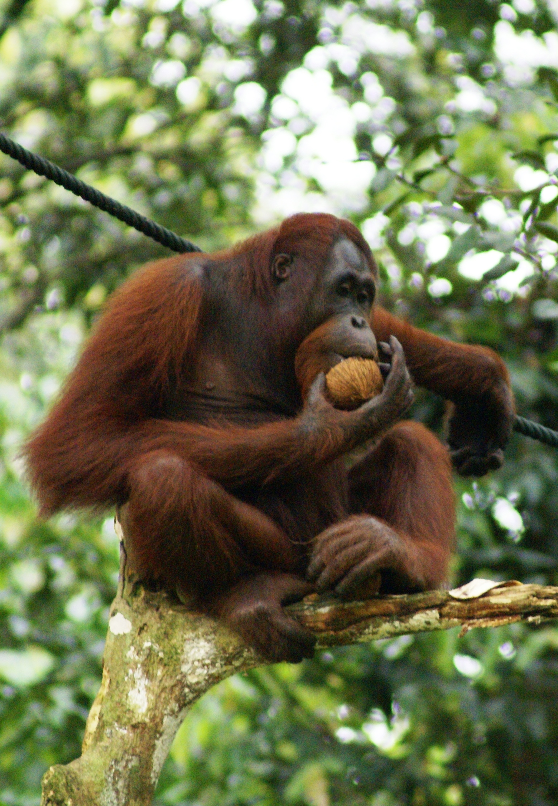

About Me
My name is Kyler Bach, I am very interested in the future of web development. With AI become more and more popular and advacane I thought it would make since to try to make sense of all the new developments.
This website is dedicated to exploring the latest trends and technologies in web development through the lense of AI.
Fun Facts About Me
- My favorite color is blue.
- I enjoying walking.
- My favorite animal is Orangutan.

One of my favorite animals is the orangutan!
More Fun Facts About Me!
Here are some additional fun facts about me!
- I enjoy playing video games.
- I have two dogs named Finn and Piper.
- I like to read books in my free time. I don't have much time now sadly.